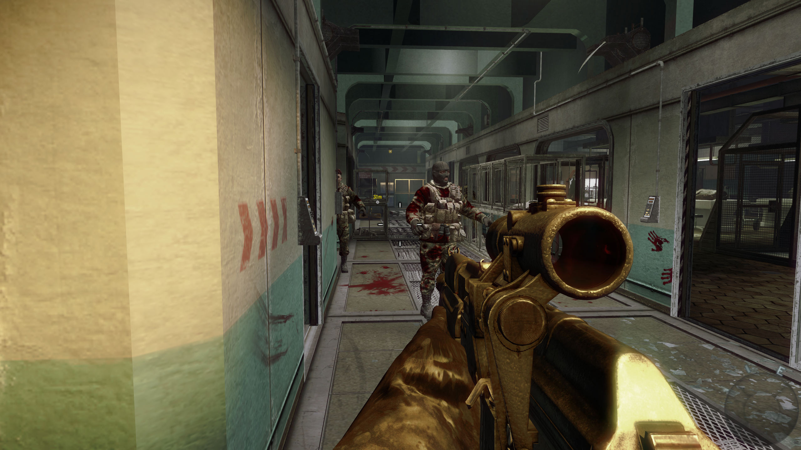
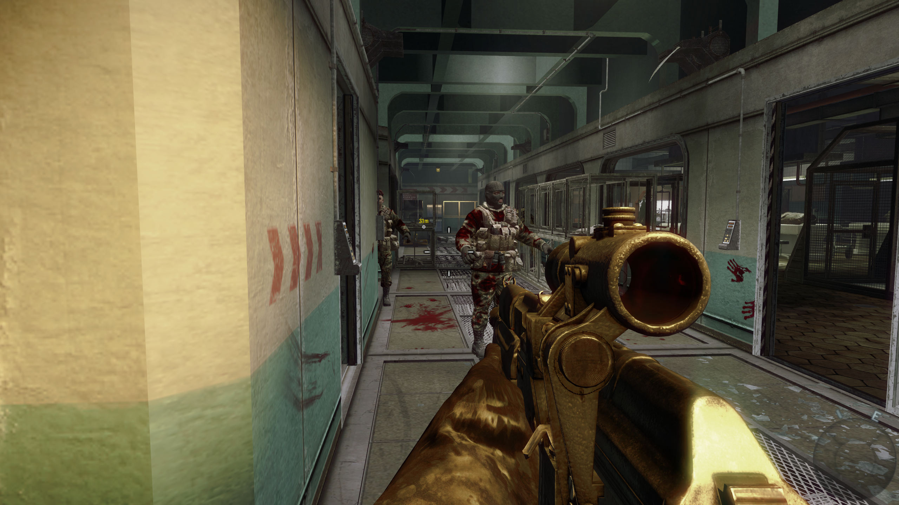

Why Call of Duty: Black Ops?
I'm not sure how I came to own this game on Steam, but I do have a history with Black Ops. When Halo 3 died down, and everyone moved over to Halo: Reach, I had a hard time with that transition. I decided to break into a similar game, and Black Ops was the other game my friends were playing. I never played the story, only the multiplayer, so I figured it was time to see what a Call of Duty single player had to offer. It wasn't much.
User Interface & Theme
The UI is tactfully out of the way, which most would say is a good thing. In a first-person shooter, you typically don't want to see a ton of random elements on your HUD. The theme of the game is during the Cold War. You play as Mason, a CIA military guy working as special forces or something to take down communists. From Castro, to some Nazi guys, to some Russian guys, you just go one-man army trying to kill enemies of the west. It's just Western propaganda, so I'm not very inspired to keep writing about it.
Gameplay
There isn't a lot of depth to the game. You go around the story, using different weapons in the game, but with a twist! You can only use the weapons that are specific to that region. It's not much, but's something. The entire game is just shooting bad guys, and responding to quick-time events.
Playing the game on the hardest difficulty, you can tell that they tuned one difficulty, then used some kind of algorithm to make the others. Some sections feel mechanically impossible, as if no one tested them. I almost gave up trying to get through the game, but I didn't. Ultimately, because of this, I won't be completing the game, just leaving it as beaten. If they left the campaign in this sorry of a state, they don't deserve me spending time getting all the achievements.
Final Thoughts
I knew the game was going to be bad. No one plays Call of Duty for the single player. I didn't realize it was going to be less fun than any shooter I've ever played, while being as hard as Halo 2. The eye-rolling Western propaganda is also beyond stupid. I have so little to add, I contemplated not making a review at all. If anything, I wish I had more to say about zombies, but since I couldn't play with anyone, it was a time and place experience.
Should you complete Black Ops?
I don't think so, no. I wouldn't recommend playing the game at all. If you're doing campaign and zombies, there are multiplayer achievements as well, so good luck.
Stats Gallery
Beaten!

Gameplay Gallery
 
